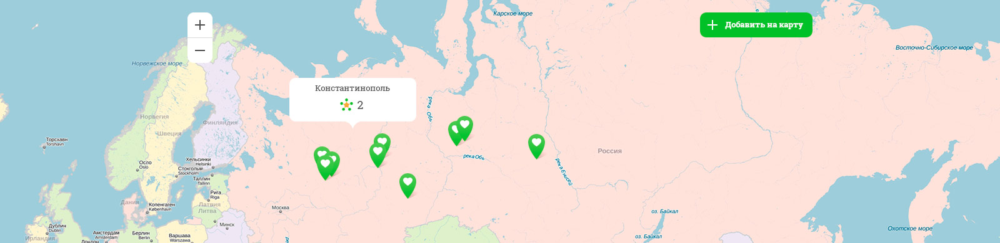

<!DOCTYPE html> 
<html lang="ru">
<head>
    <meta name="viewport" content="width=device-width, initial-scale=1, maximum-scale=1.0">
    <meta charset="utf-8" />
    <title></title>
    <link rel="stylesheet" href="css/main.css" />

    <script src="js/modernizr-2.6.2.min.js"></script>
    <script src="js/jquery-1.8.3.min.js"></script>
    <script src="js/jquery.main.js"></script>
    <script src="js/jquery.town-search.js"></script>

    <!--[if lte IE 9]>
        <script src="js/jquery.placeholder.js"></script>
        <link rel="stylesheet" href="css/pie.css" />
    <![endif]-->
    <!--[if lte IE 8]>
        <link rel="stylesheet" href="css/main.ie8.css" />
    <![endif]-->
</head>
<body>


    <!-- pop_back -->
    <div class="pop_back">

        <div class="close_back"></div>

        <!-- enter_form  если добавить форме класс error_form - будет выводиться текст, ошибка и красные поля у инпутов -->
        <form class="enter_form ">
            <h2>Вход в личный кабинет</h2>
            <span class="close_pop">close</span>

            <!-- enter_form_line -->
            <div class="enter_form_line">
                <label>Логин</label>
                <input type="text">
            </div>
            <!-- /enter_form_line -->

            <!-- enter_form_line -->
            <div class="enter_form_line">
                <label>Пароль</label>
                <input type="password">
            </div>
            <!-- /enter_form_line -->

            <p class="error_text">Логин или пароль неверны!</p>

            <input type="submit" value="Войти" class="blue_submit">

            <a href="#" class="forget_pas">Забыли пароль?</a>
            <a href="#" class="registr_but">Зарегистрироваться</a>
        </form>
        <!-- /enter_form -->

    </div>
    <!-- /pop_back -->

    <!-- pop_back -->
    <div class="pop_back2">
        <div class="close_back"></div>
        <!-- enter_form -->
        <form class="enter_form sortTown">
            <h2>Вход в личный кабинет</h2>
            <span class="close_pop">close</span>
            <input type="text"  name="searchText" data-php="php/town-search.php" class="townSearch" placeholder="Москва">

            <!-- resulSearch -->
            <div class="resulSearch">
                <ul>

                </ul>
            </div>
            <!-- /resulSearch -->

            <input type="submit" value="Выбрать" class="blue_submit">
        </form>
        <!-- /enter_form -->

    </div>
    <!-- /pop_back -->

    <!-- site -->
    <div class="site">
        <!-- header -->
        <header class="header">

            <!-- header_inside -->
            <div class="header_inside">

                <!-- logo -->
                <a href="#" title="На главную" class="logo"></a>
                <!-- /logo -->

                <a href="#" class="town_select"><span>Выберите город</span></a>

                <!-- main_menu -->
                <nav class="main_menu">
                    <a href="#">О проекте</a>
                    <a href="#">Знания</a>
                    <a href="#">Карта</a>
                    <a href="#">Контакты</a>
                </nav>
                <!-- main_menu -->

                <!-- autorization_block -->
                <div class="autorization_block">
                    <a href="#">Зарегистрироваться</a>
                    <a href="#" class="enter_but">Войти</a>
                </div>
                <!-- /autorization_block -->

            </div>
            <!-- /header_inside -->

        </header>
        <!-- /header -->

        <!-- site__content -->
        <div class="site__content">

            <!-- content-wrap -->
            <div class="content-wrap">

                <!-- inside_block -->
                <div class="inside_block">

                    <!-- about_guara -->
                    <div class="about_guara">

                        <!-- about_text -->
                        <div class="about_text">
                            <h2>В каждом городе, в каждой деревне</h2>
                            <p><b>GauraMap</b> – это  «нама-хатта» ввел Шрила Бхактивинода Тхакур, он означает «рынок святого имени». Технически нама-хаттой мы обычно называем любые духовные группы, как правило, действующие за пределами храма.</p>
                            <p>Здесь вы можете найти группу духовного общения в своем городе.Также на карте располагают разного рода ведические заведения типа кафе, клубов йоги и прочих полезный заведений. <a href="#" class="more_but">Подробнее</a> </p>
                            <a href="#" class="map_but">Карта города Коломна</a>
                            <a href="#" class="choose_town">Выбрать другой город</a>
                        </div>
                        <!-- /about_text -->

                        <!-- town_info -->
                        <div class="town_info">

                            <!-- town_img -->
                            <div class="town_img">
                                
                                
                            </div>
                            <!-- /town_img -->

                            <!-- count_green -->
                            <div class="count_green">

                                <span class="count">24819</span>
                                <span class="object">объектов
<span>Золотого века</span></span>

                            </div>
                            <!-- /count_green -->

                            <!-- count_green -->
                            <div class="count_orange">

                                <span class="count">150029</span>
                                <span class="object">Пользователей
<span>сайта</span></span>

                            </div>
                            <!-- /count_green -->

                        </div>
                        <!-- /town_info -->

                    </div>
                    <!-- /about_guara -->

                </div>
                <!-- /inside_block -->

                <!-- map_container -->
                <div class="map_container">

                    <!-- map -->
                    <div class="map">
                        
                    </div>
                    <!-- /map -->

                    <!-- gray_block -->
                    <div class="gray_block">

                        <!-- inside_block -->
                        <div class="inside_block">

                            <!-- map_info -->
                            <dl class="map_info">
                                <dt>24819</dt>
                                <dd>Группы духовного общения</dd>
                            </dl>
                            <!-- /map_info -->

                            <!-- map_info -->
                            <dl class="map_info">
                                <dt>10008</dt>
                                <dd>объектов Золотого Века</dd>
                            </dl>
                            <!-- /map_info -->

                            <!-- map_info -->
                            <dl class="map_info">
                                <dt>1836553</dt>
                                <dd>пользователей</dd>
                            </dl>
                            <!-- /map_info -->

                        </div>
                        <!-- /inside_block -->

                    </div>
                    <!-- /gray_block -->

                </div>
                <!-- /map_container -->

                <!-- inside_block -->
                <div class="inside_block">

                    <!-- news_container -->
                    <div class="news_container">

                        <dl>
                            <dt><time datetime="12-12-2012">12 февраля 2013</time></dt>
                            <dd>Добавлена Бхакти-Врикша в городе <a href="#">Владивосток</a></dd>
                        </dl>

                        <dl>
                            <dt><time datetime="12-12-2012">20 марта 2013</time></dt>
                            <dd>21 января в Москву приезжает Чайтанья Чандра Чаран прабу с лекциями о взаимотношениях мужчины и женщины</dd>
                        </dl>

                        <dl>
                            <dt><time datetime="12-12-2012">10 сентября 2013</time></dt>
                            <dd>Добавлена Бхакти-Врикша в городе <a href="#">Константинополь</a></dd>
                        </dl>

                        <a href="#" class="more_but">Посмотреть все новости</a>


                    </div>
                    <!-- /news_container -->

                    <!-- know_block -->
                    <div class="know_block no_border">
                        
                        <h2>Что такое Золотой век?</h2>
                        <p>Термин "нама-хатта" ввел Шрила Бхактивинода Тхакур, он означает "рынок святого имени". Технически нама-хаттой мы обычно называем любые духовные группы, как правило, действующие за пределами храма.</p>
                        <p>Здесь вы можете найти группу духовного общения в своем городе.Также на карте располагают разного рода ведические заведения типа кафе, клубов йоги и прочих полезный заведений. Здесь вы можете найти группу духовного общения в своем городе.Также на карте располагают разного рода заведения типа кафе, клубов йоги и прочих полезный заведений.</p>
                        <a href="#" class="more_but">Подробнее</a>
                    </div>
                    <!-- /know_block -->

                    <!-- know_block -->
                    <div class="know_block">
                        
                        <h2>Что такое Веда?</h2>
                        <p>Термин "нама-хатта" ввел Шрила Бхактивинода Тхакур, он означает "рынок святого имени". Технически нама-хаттой мы обычно называем любые духовные группы, как правило, действующие за пределами храма.</p>
                        <p>Здесь вы можете найти группу духовного общения в своем городе.Также на карте располагают разного рода ведические заведения типа кафе, клубов йоги и прочих полезный заведений. Здесь вы можете найти группу духовного общения в своем городе.Также на карте располагают разного рода заведения типа кафе, клубов йоги и прочих полезный заведений.</p>
                        <a href="#" class="more_but">Подробнее</a>
                    </div>
                    <!-- /know_block -->

                    <!-- know_block -->
                    <div class="know_block">
                        
                        <h2>Йога – что это?</h2>
                        <p>Термин "нама-хатта" ввел Шрила Бхактивинода Тхакур, он означает "рынок святого имени". Технически нама-хаттой мы обычно называем любые духовные группы, как правило, действующие за пределами храма.</p>
                        <p>Здесь вы можете найти группу духовного общения в своем городе.Также на карте располагают разного рода ведические заведения типа кафе, клубов йоги и прочих полезный заведений. Здесь вы можете найти группу духовного общения в своем городе.Также на карте располагают разного рода заведения типа кафе, клубов йоги и прочих полезный заведений.</p>
                        <a href="#" class="more_but">Подробнее</a>
                    </div>
                    <!-- /know_block -->

                    <!-- know_block -->
                    <div class="know_block">
                        
                        <h2>Группа духовного общения</h2>
                        <p>Термин "нама-хатта" ввел Шрила Бхактивинода Тхакур, он означает "рынок святого имени". Технически нама-хаттой мы обычно называем любые духовные группы, как правило, действующие за пределами храма.</p>
                        <p>Здесь вы можете найти группу духовного общения в своем городе.Также на карте располагают разного рода ведические заведения типа кафе, клубов йоги и прочих полезный заведений. Здесь вы можете найти группу духовного общения в своем городе.Также на карте располагают разного рода заведения типа кафе, клубов йоги и прочих полезный заведений.</p>
                        <a href="#" class="more_but">Подробнее</a>
                    </div>
                    <!-- /know_block -->

                    <a href="#" class="arrow_but"><span>Хочу узнать больше</span></a>

                </div>
                <!-- /inside_block -->

            </div>
            <!-- /content-wrap -->

        </div>
        <!-- /site__content -->

    </div>
    <!-- /site -->

    <!-- footer -->
    <footer class="footer">
        <div class="footer__layout">

            <a href="#" class="footer_logo"></a>

            <!-- footer_menu -->
            <nav class="footer_menu">
                <a href="#">О проекте</a>
                <a href="#">Знания</a>
                <a href="#">Карта</a>
                <a href="#">Контакты</a>
            </nav>
            <!-- /footer_menu -->


        </div>
    </footer>
    <!-- /footer -->

</body>
</html>